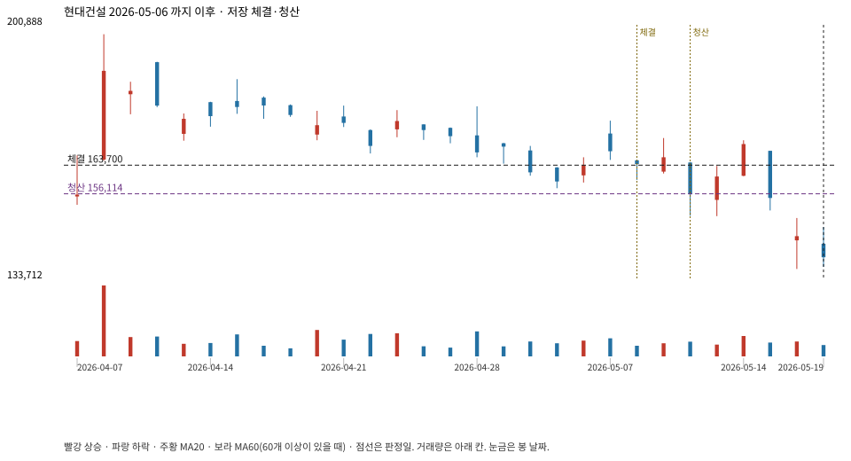

계좌를 다시 돌리지 않았다. 아래는 저장된 주문·체결·청산·비용·손익이다.

{
"case_id": "933792f7c0be4f62",
"status": "closed",
"trade": {
"symbol": "000720.KS",
"signal_date": "2026-05-06",
"quantity": 139,
"entry": 163700,
"stop": 156192,
"target": 198400,
"planned_risk": 1098921.476655996,
"reserved_cash": 22777054.299999997,
"fill": {
"date": "2026-05-08",
"price": 163700,
"fee": 22754.3
},
"exit": {
"date": "2026-05-12",
"price": 156113.904,
"reason": "stop",
"net_pnl": -1098921.4766559973,
"ambiguous_bar": false
}
},
"cost": "research fee 10bp each side, slippage 5bp; amounts below are the stored ledger, not a new run",
"chart": "c\/933792f7c0be4f62.svg"
}